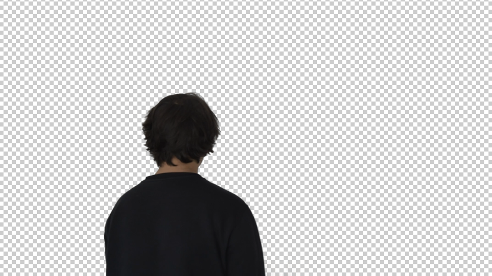
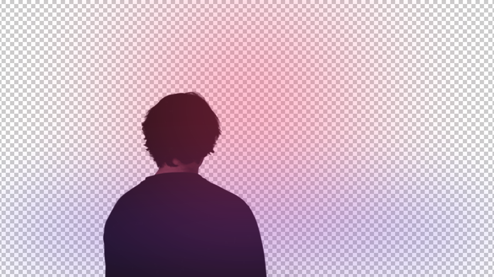
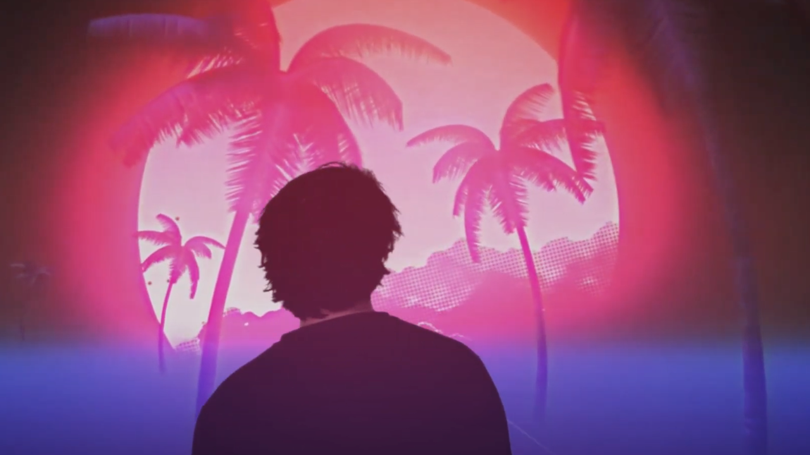
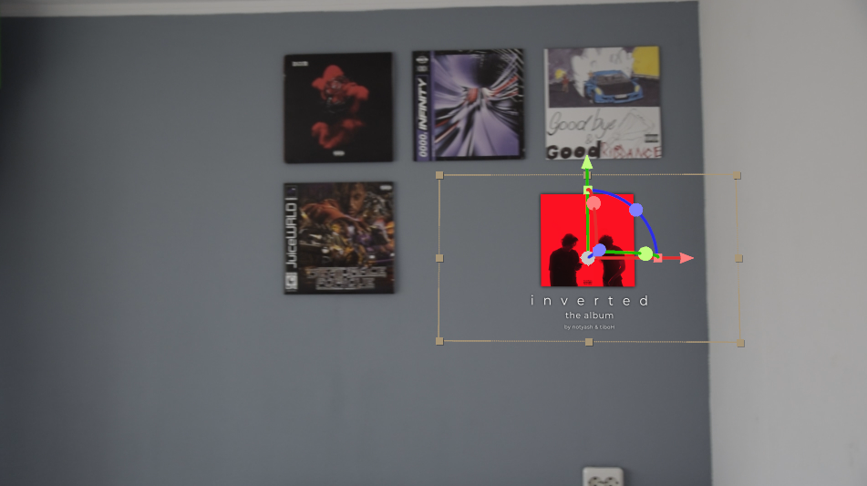

media technieken | video editing in adobe after effects
Aanpak
De Eerste focus module die ik heb gekozen om te doen is de focus module Media Technieken. Ik koos
hiervoor omdat ik hiermee meer richting de Design kant op kon gaan van Media en dat is de kant
waarin ik mij vooral wil specialiseren. De laatste opdracht van de 3 die ik gekozen heb om te doen
was de After Effects opdracht. Hierin moest je 2 soorten videos maken. Een korte video waarin je
jezelf, met hulp van de chroma key effect, in een heel andere wereld zet en een korte video waarin
je een object getracked in een zelfgemaakte video plaatst.
Dit is het
proces daarvan.
Chroma Key
Bij deze opdracht moest ik mezelf in een hele andere dimensie editen. Het was een uitdaging maar eentje die mij wel aansprak. Ik begon met het klaarmaken en positioneren van mijn camera. Na dat gedaan te hebben nam ik mezelf op die liep richting een witte muur, en rondkeek alsof er heel veel gaande was terwijl ik eigenlijk naar een muur keek. Na dit gedaan te hebben ging ik direct naar After Effects. Ik begon met het wegwerken van de muur doormiddel van de chroma key effect. Na wat gespeeld te hebben met de settings had ik de achtergrond volledig weggewerkt en mezelf uitgeknipt, nu had ik alle vrijheid om mezelf te plaatsen in elke wereld mogelijk. Ik koos voor een "vaporwave" wereld waar alles heel neongekleurd was en futuristisch. Ik zocht naar videos op YouTube van zo'n soort omgeving en uiteindelijk vond ik de perfecte video. Deze plakte ik in de tijdlijn met mijzelf erin. Het leek nog iets te nep dus ik ben gaan spelen met de color grading van mijzelf. Hiervoor ging ik de curves aanpassen, de tint aanpassen en nog 2 solids maken die dezelfde kleuren hadden als de omgeving. Deze solids vervaagde ik met de gaussian blur effect, zodat het leek als een soort licht die over mij scheen.
  Na dit allemaal gedaan te hebben kreeg ik precies het effect wat ik wilde, ik ten slotte voegde nog een liedje toe die samenging met de omgeving en een wipe transitie om het verschil in beeld te brengen. Dit is het uiteindelijke resultaat.
3D Camera Tracking
In deze opdracht was het de bedoeling om 3D Camera Tracking te gebruiken. Dit is een functie binnenin After Effects die als eerst het fragment helemaal gaat uitlezen, vervolgens maakt hij allemaal punten aan waaraan je objecten kan toewijzen zodat deze op de plek blijven van het punt ongeacht de beweging van de camera. Ik begon met het schieten van een simpele video in mijn kamer, hierin legde ik vooral de nadruk op mijn vinylmuur, want hier wilde ik een object op plaatsen. Na dit gedaan te hebben ging ik over naar After Effects met mijn fragment en een object die ik van te voren gemaakt had. Allereerst liet ik de trackingfunctie mijn fragment uitlezen, na dit gedaan te hebben kreeg ik veschillende punten waar ik uit kon kiezen. Uiteindelijk ben ik voor dit punt gegaan:
Hierna heb ik nog een beetje lopen spelen met de algemene ligging van het object, maar al snel was het resultaat er. Hieronder kun je het bekijken.
Reflectie
Deze opdrachten vond ik zeker leuk om uit te voeren. Vooral de eerste. Zoals ik voorheen al zei heb ik weinig ervaring met het gebruik van chroma key maar door deze opdrachten krijg ik daar veel meer kennis over en dat doet mij alleen maar goed. Met beiden opdrachten ben ik zeker tevreden.
© 2022 Yassin Chehlaoui